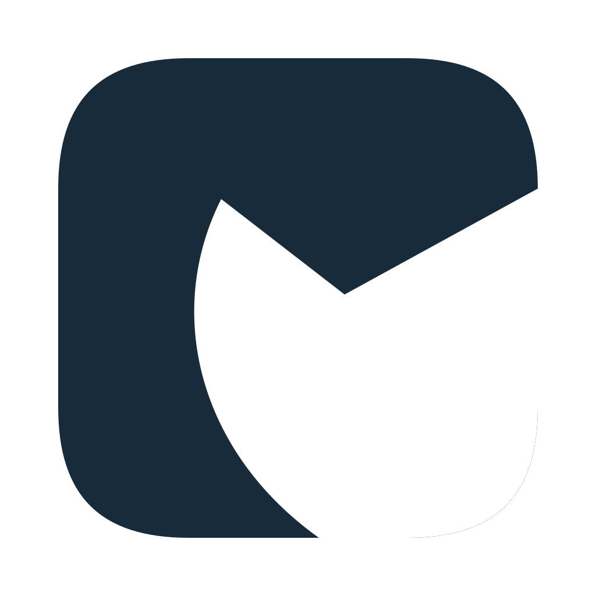
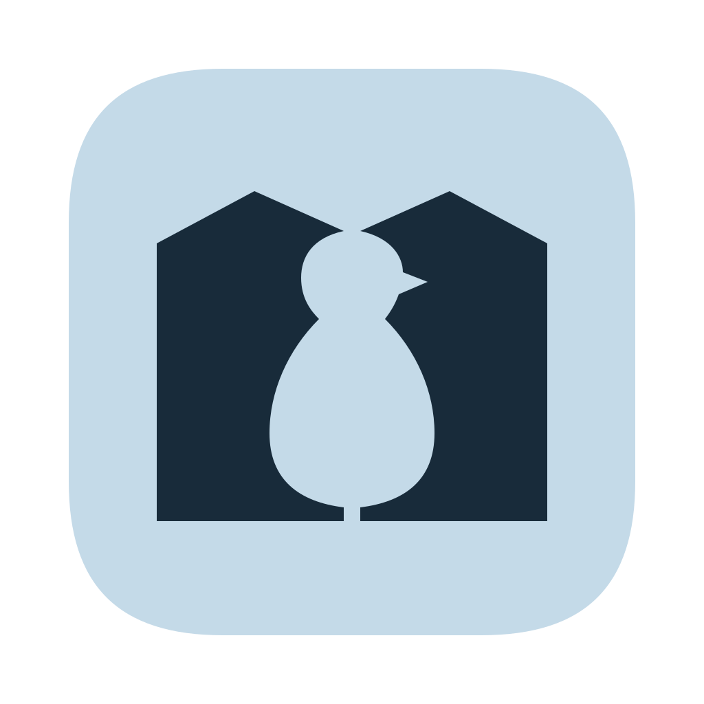
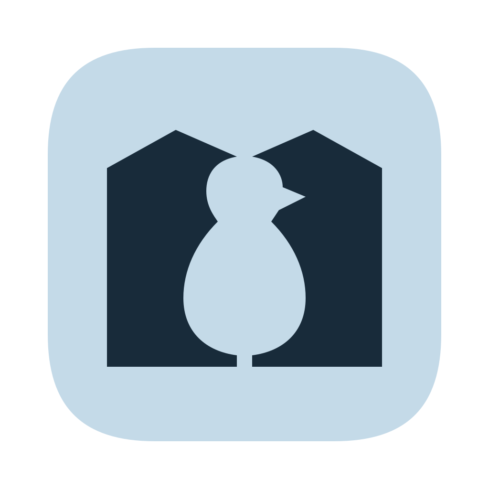
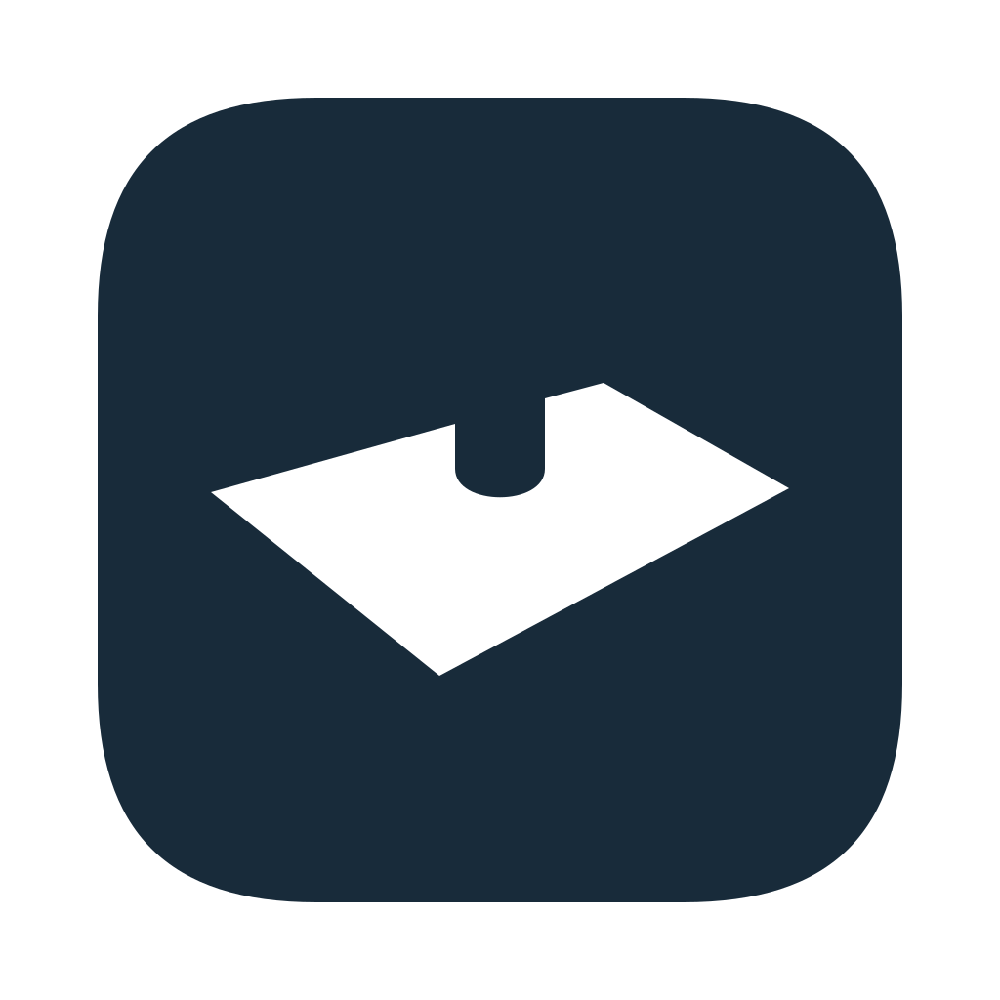
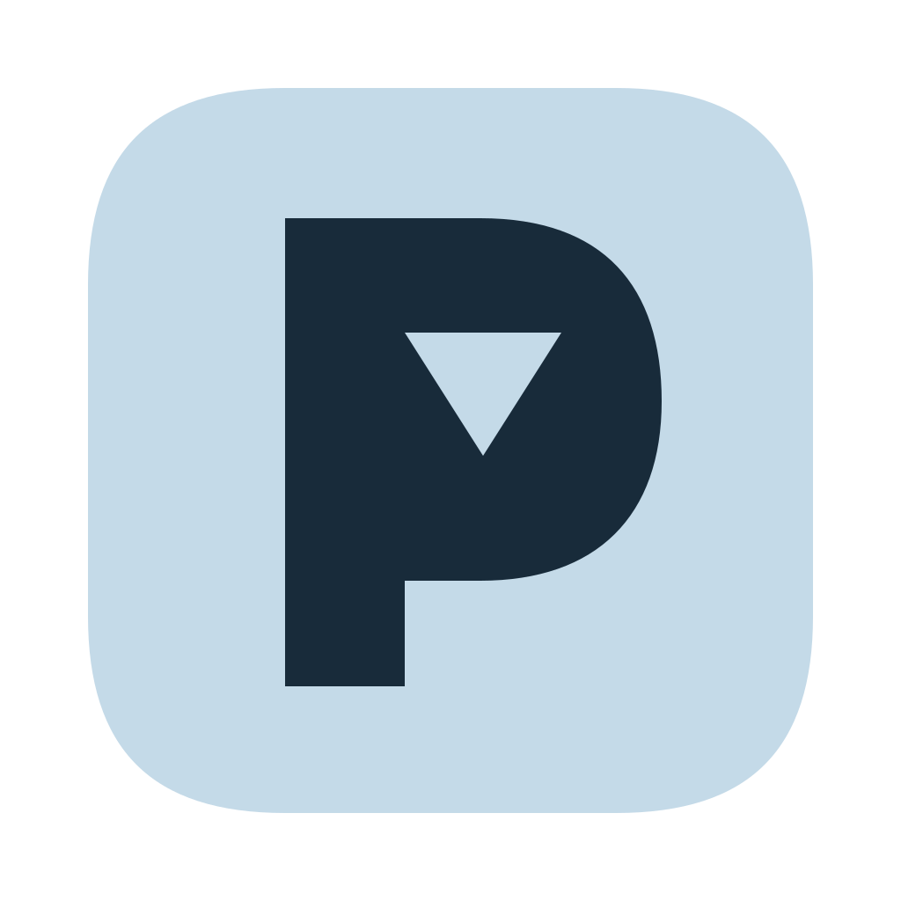
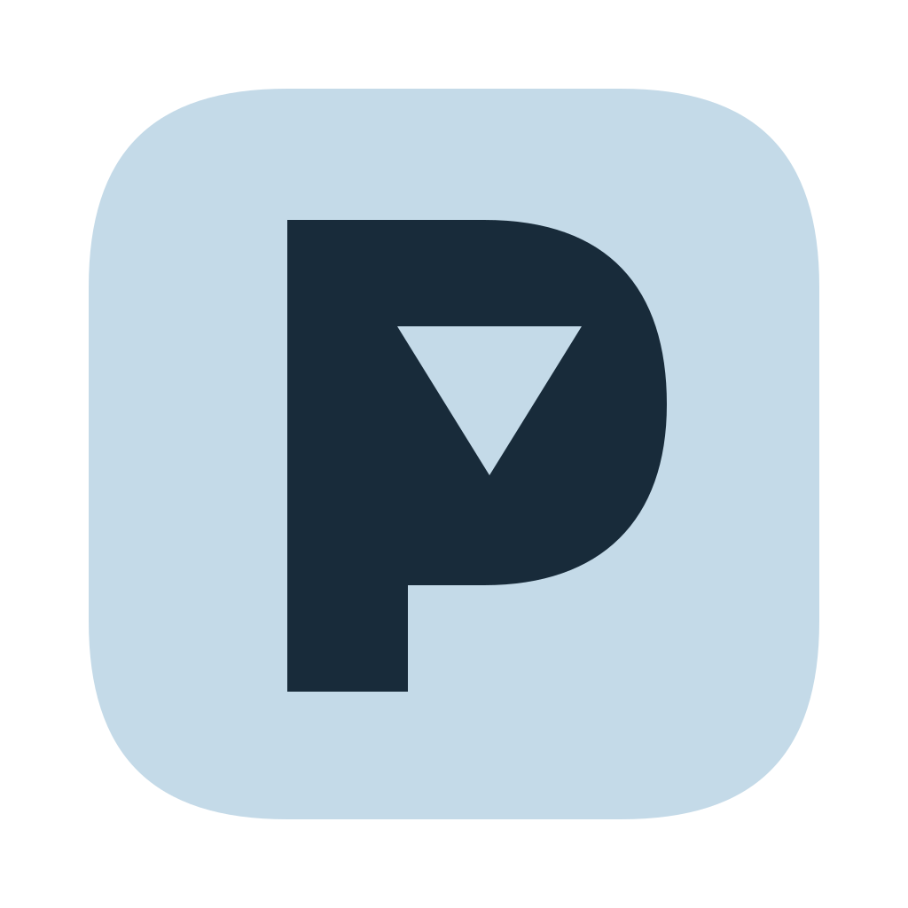

Tuxedo split


Dark
32
16
Light
32
16
A curved back. A belly folded into a V.
PENGUIN / ROUND 02

A curved back. A belly folded into a V.
An envelope V and one warm beak-dot.


32Two letters leave a penguin in the gap.

A paper floe. A tiny notch of penguin.


32A geometric P with a flap for its counter.
A tilted pebble, opened with one V cut.
Two letters meet in a tuxedo silhouette.
One white V, suspended over arctic blue.
64px in the Dock · consistent canvas margins